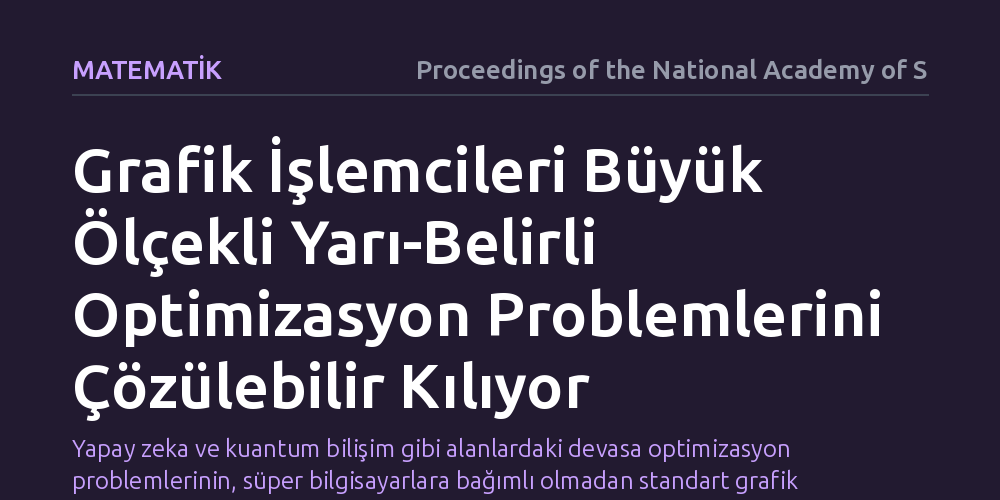

MATEMATIK · Proceedings of the National Academy of Sciences · 2026-10-09
Çalışma, büyük ölçekli yarı-belirli programlama problemlerinin grafik işlemcileri kullanılarak nasıl verimli çözülebileceğini araştırıyor. Geliştirilen GPU tabanlı hesaplama mimarisi, klasik işlemcilerin yetersiz kaldığı devasa optimizasyon problemlerinin uygulanabilir sürelerde çözülebilmesini sağlıyor.
Yapay zeka ve kuantum bilişim gibi alanlardaki devasa optimizasyon problemlerinin, süper bilgisayarlara bağımlı olmadan standart grafik kartlarıyla çözülebileceğini gösteriyor.

Modern bilim ve mühendisliğin en çetin problemleri genellikle bir optimizasyon, yani en iyi çözümü bulma meselesine dayanır. Makine öğreniminden kuantum bilişime, kontrol teorisinden karmaşık ağ analizlerine kadar pek çok alanda araştırmacılar yarı-belirli programlama (SDP) adı verilen güçlü bir matematiksel çerçeveye başvurur. Bu yöntem, son derece zengin ve esnek bir modelleme gücü sunsa da beraberinde ciddi bir hesaplama yükü getirir.
Problem boyutu büyüdükçe gereken bellek miktarı ve işlem karmaşıklığı katlanarak artar. Geleneksel merkezi işlem birimleri (CPU) üzerinde çalışan klasik çözücüler, yüz binlerce hatta milyonlarca değişken içeren devasa matrislerle karşılaştığında saatler veya günler süren hesaplama döngülerine takılır ya da yetersiz bellek nedeniyle tamamen tıkanır. Bu durum, kuramsal olarak çözülebileceği bilinen birçok kritik problemin pratikte çözümsüz kalmasına yol açıyordu.
Araştırmacılar, bu hesaplama darboğazını aşmak amacıyla video oyunları ve derin öğrenme modelleriyle yaygınlaşan grafik işlem birimlerinin (GPU) sunduğu muazzam paralel hesaplama gücünden yararlanma yoluna gitti. Grafik kartları, binlerce küçük çekirdeği sayesinde aynı anda milyonlarca bağımsız matematiksel işlemi yürütebilme kabiliyetine sahiptir. Ancak yarı-belirli programlama algoritmalarını doğrudan bir GPU mimarisine aktarmak kolay bir mühendislik işi değildir.
Yarı-belirli programlamanın temelini oluşturan matris ayrışımları, özdeğer hesaplamaları ve iç nokta yöntemleri, veriler arasında yoğun bir bağımlılık barındırır. Çalışmada, algoritmaların bellek erişim desenleri GPU mimarisine uyarlanacak şekilde yeniden tasarlandı. Böylece hem bellek aktarım gecikmeleri en aza indirildi hem de devasa matris çarpımları donanımın tüm çekirdeklerine dengeli biçimde paylaştırıldı.
Geliştirilen GPU tabanlı algoritma, literatürde kabul görmüş standart kıyaslama problemleri üzerinde titizlikle test edildi. Elde edilen sonuçlar, daha önce klasik CPU tabanlı çözücülerle makul sürelerde ele alınamayan devasa boyutlu yarı-belirli programların başarıyla çözülebildiğini ortaya koydu.
Yöntem, yalnızca işlem sürelerini belirgin biçimde kısaltmakla kalmadı, aynı zamanda algoritmik kararlılıktan ve sayısal hassasiyetten ödün vermeden sonuca ulaşılabileceğini kanıtladı. Özellikle seyrek matris yapılarının verimli işlenmesi sayesinde, mevcut donanım sınırları içerisinde çözülebilen problem ölçeği kayda değer ölçüde genişletildi.
Bu çalışmanın ortaya koyduğu bulgular, yalnızca kuramsal optimizasyon matematikçileri için değil, optimizasyonu bir araç olarak kullanan geniş bir bilim topluluğu için pratik sonuçlar doğurmaktadır. Örneğin kuantum enformasyon teorisinde sistem durumlarının doğrulanması ve dolanıklık sınırlarının belirlenmesi doğrudan büyük ölçekli yarı-belirli programlara dayanır. Benzer şekilde, büyük veri kümeleri üzerinde çalışan modern yapay zeka modellerinin dışbükey gevşetme adımları da bu tür optimizasyonları gerektirir.
Araştırma, özel süper bilgisayarlara ihtiyaç duymadan, yaygın olarak erişilebilen ticari GPU donanımlarıyla dahi ileri düzey matematiksel problemlerin pratik ölçeklerde çözülebileceğini göstermektedir. Bu gelişme, yüksek boyutlu veri analitiği ve kuantum simülasyonları gibi alanlarda yeni nesil algoritmaların önünü açmaktadır.